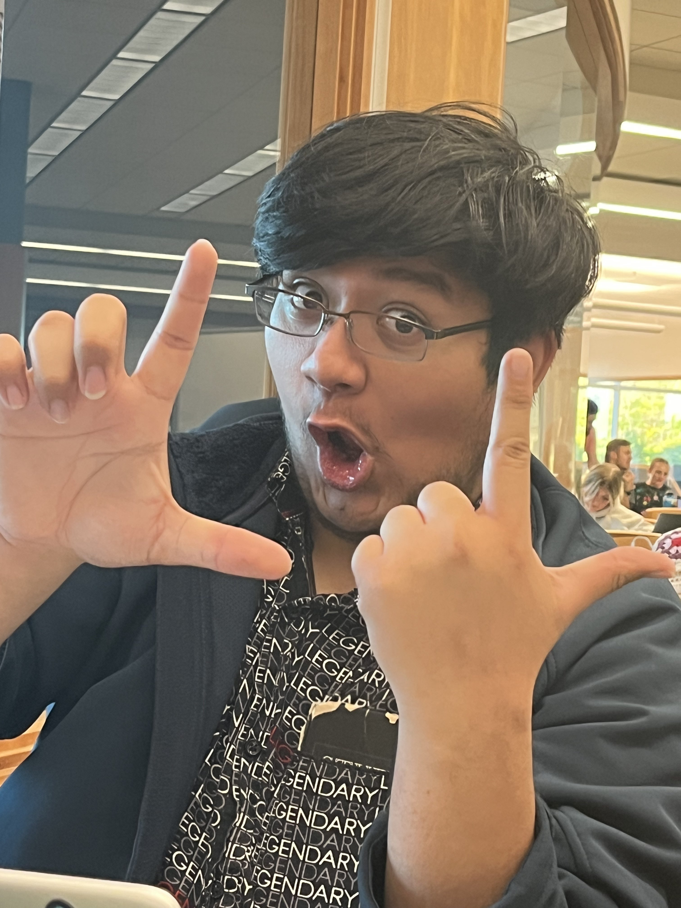

Click Me!



The resume of Bodacious Brody
"I am going to turn into a truck now"
Hey y’all, my name is Brody Alberto Garcia. I try my best.
But sometimes my best isn’t good enough. And that’s okay. As long as I improve myself, I should be fine in the long run. Any progress is good progress, I always say. I am a huge fan of The Transformers. I love collecting them. I also like taking pictures of my Transformers. Photography is a hobby of mine that I considered for a career for a little bit, but I’ve seen folks regret turning their hobbies into full-time jobs.
Now, why did I choose Computer Science as my major? Because I like being around computers. I wouldn’t say it’s my passion, but I enjoy it. Everything follows rules, and most of the time, you know what you did wrong. There isn’t much requirement for creativity, and that’s perfect for me as someone who isn’t too good at that.
I wouldn't say I have super huge or abimitous plans for the future. I just want to live comfortably while exploring different oppurtunities every once in a while.